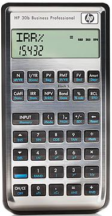

WebCal 計數機網頁
HP-20B及HP-30B 財務計算機
|  | |
| HP 20B | HP 30B |
HP 20B
2008年HP 惠普科技公司推出新型號HP 20B財務計算機 ，它是雙行顯示屏，上行顯示操作符號(8位)及11個指示項，下行顯示輸入數值及計算結果(12+3位)，較特別的是有三種輸入操作模式可以選擇，分別是算式順序輸入(Algebraic mode)、連鎖方法(Chain mode)及HP計算機獨有的RPN模式。這部計算機除了不錯的財務計算功能外，還加入了一些科學計算功能，包括對數及三角函數等功能，所以可以算是財務及科學兩用的計算機，由於計算機顯示屏第二行不是圓點形式，10個數字記憶使用0-9的儲存位置，不是字母代號記憶， 所以能夠滿足香港考評局對准用計算機的要求，在2009年已獲香港考評局接納為准用計算機，可以在香港中學文憑試中使用。
HP 20B主要功能及特點如下:
˙貨幣的時間值計算，例如: 年金及按揭計算等等。
˙攤銷計算。
˙債券估值。
˙現金流量分析。
˙統計功能，包括單變量及雙變量分析，共有8種統計模式，可以計算標準差、樣本標準差及標準誤差等。
˙現金流及統計數據的記憶內量為50 memory slots
˙日期計算。
˙折舊計算。
˙成本、售價及毛利計算。
˙損益分析。
˙年利率與實際年利率轉換。
˙百分率及複利計算。
˙ 一般科學函數，包括對數及三角函數等。
˙十個數字記憶。
˙計算機內部使用十五位進行運算，直接輸入數值則最多12位，準確度較很多科學函數計算機高。
․較特別的是有八種統計概率函數及反函數，包括標準常態分佈概率(Standard normal distribution)、反查標準常態分佈概率(Inverse Standard normal distribution)、Stundet t-分佈概率(Stundent t distribution)、反查Stundet t-分佈概率(Inverse student t distribution)、卡方分佈概率(Chi distribution)、反查卡方分佈概率(Inverse chi distribution)、F-分佈概率(F distribution)及反查F-分佈概率(Inverse F distribution)，乘階功能亦可以計算非整數及負數的情況。
HP 30B
2010年一月HP 惠普科技公司推出新型號HP 30B財務計算機 ，基本上是舊HP 20B的加強版本，從表面分析，它與HP 20B相似，計算機顯示屏第二行不是圓點形式，10個數字記憶使用0-9的儲存位置，由於不是字母代號記憶， 應該能夠滿足香港考評局對准用計算機的要求，有可能會成為香港會考/香港文憑試的准用計算機。
HP30B除了擁有HP20B的功能外，還新增加了下列各項的功能：
˙按揭計算方面增加了Canadian Mortages。
˙統計概率函數增加了二項分佈概率(Binomial distribution)。
˙柏力克-舒爾期權定價計算(Black-Scholes Option Pricing)，這項功能較特別，現時絶大多財務計算機都沒有期權定價功能，HP亦是首次將這個功能加到財務計算機中。
˙解方程功能(HP solve)，能夠求任意方程式(一個變數)的解。
˙程式功能。HP 30B最多可以儲存10個程式，程式總容量為290 bytes，程式專用指令有條件測試指令(?=, ?≠, ?>, ?<, ?≧及?≦)、轉移指令(GOTO, GOTOT及GOTOF)、迴圈指令(DSE及ISG)、子程式指令(CALL及RTN)等等。